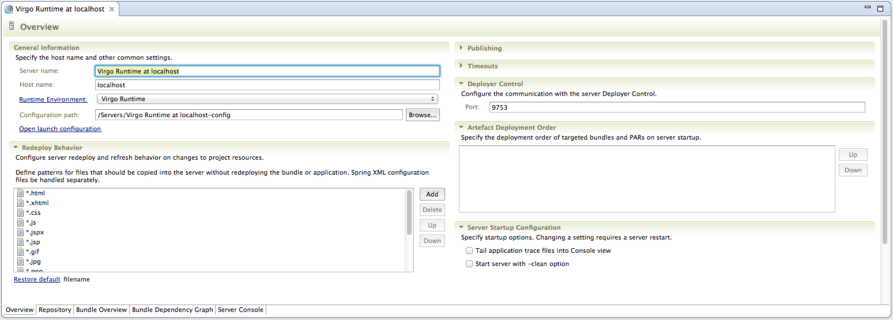

Table of Contents
After successful configuration of an instance of the Virgo Runtime Environment in Eclipse you can use the server editor to configure and explore many different aspects of the Virgo Runtime instance. To open a server editor double-click a Virgo Runtime instance in the Servers view.
The server overview page is the first page of the editor. Please note that opening of the Editor may take a few seconds as the contents of the local repository needs to be indexed before opening.

See the Web Tools Platform Guide for more information on what the various configuration options do.